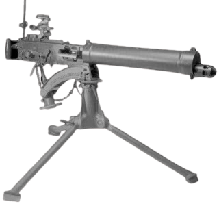
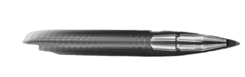
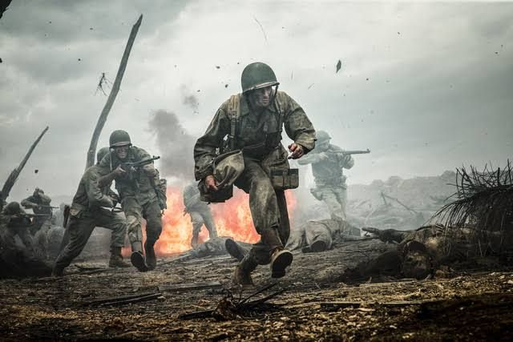
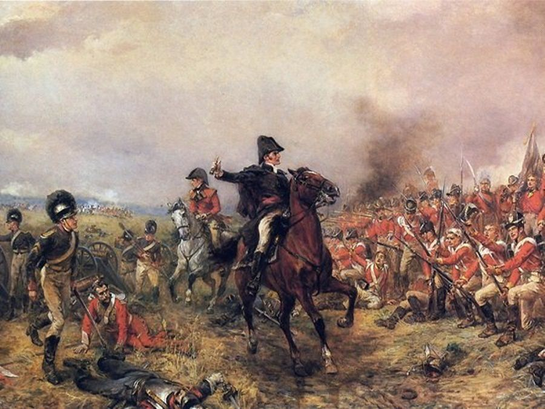
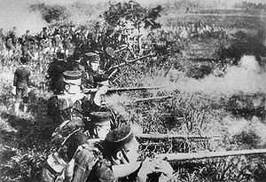

สงครามโลกครั้งที่ 1
- สงครามโลกครั้งที่หนึ่ง (World War I หรือ First World War) หรือเป็นที่รู้จักกันว่า
- “สงครามครั้งยิ่งใหญ่” (Great War) หรือ“สงครามเพื่อยุติสงครามทั้งมวล”
- (War to End All Wars) เริ่มใน ค.ศ. 1914 สิ้นสุดในค.ศ.1918
- เป็นความขัดแย้งระหว่างมหาอำนาจ 2 ค่าย คือ ประกอบด้วย
- เยอรมนี ออสเตรีย – ฮังการี และอิตาลี (ผู้นำสำคัญ คือบิสมาร์คแห่งเยอรมนี)
- กับฝ่าย ประกอบด้วย Triple Entente ได้แก่ บริเตนใหญ่ ( อังกฤษ )
- ฝรั่งเศส และรัสเซีย การรบเริ่มขึ้นหลังการลอบสังหารมกุฎราชกุมารแห่งออสเตรีย – ฮังการี
- และสิ้นสุดลงด้วยความพ่ายแพ้ของมหาอำนาจกลาง หรือ Triple Alliance
- มีการทำสนธิสัญญาแวร์ซายส์ บังคับให้เยอรมนีและพันธมิตรเสียค่าปฏิกรรมสงคราม
- ชดใช้จำนวนมหาศาลและเสียดินแดนที่เป็นอาณานิคมให้แก่ฝ่าย Triple Entente

สงครามโลกครั้งที่ 2
- สงครามโลกครั้งที่สอง (World War II หรือ Second World War )
- เป็นความขัดแย้งทางทหารในระดับโลก ซึ่งครอบคลุมประเทศส่วนใหญ่ในโลก
- รวมทั้งประเทศมหาอำนาจทั้งหมดในสมัยนั้น โดยสามารถแบ่งความขัดแย้งได้เป็น
- สองภูมิภาค และดำเนินไปจนกระทั่งสิ้นสุดในปี ค.ศ. 1945 คาดว่ามีผู้เสียชีวิต
- ในสงครามครั้งนี้มากกว่า 70 ล้านคน นับเป็นสงครามที่ก่อให้เกิดความสูญเสียชีวิต
- มนุษย์มากที่สุดในประวัติศาสตร์ของมนุษยชาติ
- ผู้เข้าร่วมสงครามแบ่งเป็นสองฝ่าย ฝ่ายหนึ่งคือฝ่ายสัมพันธมิตรเดิมประกอบด้วย
- อังกฤษ ฝรั่งเศสและสหภาพโซ-เวียต ส่วนฝ่ายตรงข้ามเรียกว่าฝ่ายอักษะ นำโดย
- เยอรมนี อิตาลี และญี่ปุ่น ซึ่งมีการระดมกำลังทหารทั้งหมดมากกว่า 100 ล้านนาย
- นับเป็นสงครามขนาดใหญ่ที่สุดเท่าที่เคยมีมา และเป็น ” สงครามเบ็ดเสร็จ ”
- ซึ่งได้นำทรัพยากรทางเศรษฐกิจ อุตสาหกรรมและวิทยาศาสตร์ไปใช้ในการสงครามโดย
- ไม่เลือกว่าเป็นของพลเรือนหรือทหาร จนได้มีประมาณกันว่าสงครามโลกครั้งนี้มีค่าใช้จ่าย
- เป็นมูลค่าราวหนึ่งล้านล้านดอลลาร์สหรัฐ ตามค่าเงินในปี ค.ศ. 1944 ซึ่งยังผลให้
- เป็นสงครามที่ใช้เงินทุนและชีวิตมากที่สุดด้วยเช่นกัน
- สงครามครั้งนี้ฝ่ายสัมพันธมิตรได้รับชัยชนะ แต่ว่าชาติตะวันตกในทวีปยุโรปก็อ่อนกำลัง
- ลงอย่างมาก ส่งผลให้สหรัฐอเมริกากับสหภาพโซเวียต กลายเป็นประเทศมหาอำนาจและนำ
- ไปสู่สงครามเย็นที่ดำเนินต่อมาอีก 46 ปี สหประชาชาติได้รับการสถาปนาขึ้น ด้วยความหวัง
- ว่าจะสามารถป้องกันไม่ให้เกิดความขัดแย้งเช่นที่เกิดขึ้นนี้ได้อีก ภายหลังสงคราม
- มีการเคลื่อนไหวในทวีปเอเชียและแอฟริกาเพื่อเรียกร้องเอกราชจากการตกเป็นอาณานิคมของ
- ประเทศในยุโรป ขณะเดียวกัน ยุโรปตะวันตกได้พยายามมุ่งหน้าสู่การบูรณภาพ


สงครามครูเสด ( Crusade War )
- สงครามครูเสด (The Crusades) คือ สงครามระหว่างศาสนา
- ซึ่งอาจหมายถึงสงครามระหว่างชาวคริสต์ต่างนิกายด้วยกันเอง
- หรือชาวคริสต์กับผู้นับถือศาสนาอื่นก็ได้ แต่โดยส่วนใหญ่มักหมายถึง
- สงครามครั้งใหญ่ระหว่างชาวมุสลิมและชาวคริสต์ ในช่วงศตวรรษที่ 11 ถึง13
- ในตอนเริ่มสงครามนั้นชาวมุสลิมปกครองดินแดนศักดิ์สิทธิ์อยู่ดินแดนแห่งนี้
- เป็นสถานที่สำคัญของสามศาสนาได้แก่ อิสลาม ยูได และ คริสต์
- ในปัจจุบันดินแดนแห่งนี้คือ ประเทศอิสราเอล หรือ ปาเลสไตน์
- ชาวมุสลิมครอบครอง เมืองนาซาเรธ เบธเลเฮม และเมืองสำคัญ
- ทางศาสนาอีกหลายเมือง ในยุคของคอลีฟะหฺอุมัร (634-44)
- ซึ่งเป็นผู้นำทางศาสนาและการเมืองของอาณาจักรอิสลามในยุคนั้น
- บทสรุปของสงครามในครั้งนั้นคือกองทัพมุสลิมสามารถยึดดินแดน
- ศักดิ์สิทธิ์คืนจากชาวคริสต์ได้ และขับไล่ผู้รุกรานต่างดินแดนออกไป
- ซึ่งยังคงดำรงชาติมุสลิมสืบต่อมาจนถึงทุกวันนี้
- สงครามครูเสด มีระยะเวลายาวนานถึง 200 ปี
- ครั้งที่ 1 ระหว่างปี 1095 – 1101
- ครั้งที่ 2 ระหว่างปี 1147 – 1149
- ครั้งที่ 3 ระหว่างปี 1188 – 1192
- ครั้งที่ 4 ระหว่างปี 1201 – 1204
- ครั้งที่ 5 ระหว่างปี 1217 – 1221
- ครั้งที่ 6 ระหว่างปี 1228 – 1229
- ครั้งที่ 7 ระหว่างปี 1248 – 1254
- ครั้งที่ 8 ระหว่างปี 1270


สงครามจีน-ญี่ปุ่น ( Sino – Japanese War )
- 25 กรกฎาคม พ.ศ. 2437 สงครามจีน-ญี่ปุ่น ครั้งแรก
- (First Sino-Japanese War) เริ่มเปิดฉากขึ้นเมื่อเรือ
- ลาดตระเวณของจักรวรรดิญี่ปุ่นยิงปืนใส่เรือรบของจีน
- สงครามจีน-ญี่ปุ่นครั้งแรกเกิดขึ้นระหว่าง
- วันที่ 1 กันยายน 2437-17 เมษายน 2438
- เป็นการสู้รบกันระหว่าง ราชวงศ์ชิง (Qing Dynasty)
- ของจีนกับ จักรพรรดิเมจิ (Meiji Emperor) แห่งญี่ปุ่น
- เพื่อครอบครอง คาบสมุทรเกาหลี (Korea)ในสมัยนั้นญี่ปุ่น
- ได้พยายามพัฒนาประเทศทั้งทางทหารและอุตสาหกรรมให้ทันสมัย
- ตามแบบชาติตะวันตกจึงต้องการขยายดินแดนมายังเอเชียตะวันออก
- โดยเฉพาะบริเวณคาบสมุทรเกาหลี ซึ่งเป็นจุดยุทธศาสตร์ที่สำคัญ
- สำหรับป้องกันประเทศจากจักรวรรดินิยมตะวันตก อีกทั้งยังอุดมสมบูรณ์
- ไปด้วยแร่เหล็กและถ่านหิน
- ในอดีตเกาหลีเคยเป็นประเทศราชของจีนมายาวนานจนถึงสมัยราชวงชิง
- จีนเริ่มอ่อนแอลงเรื่อย ๆ หลังจากพ่ายแพ้อังกฤษในสงครามฝิ่น (Opium Wars)
- และ สงครามจีน-ฝรั่งเศส (Sino-French War) ในขณะที่ญี่ปุ่นกำลังฉายแรงรุ่งโรจน์
- เหล่าขุนนางเกาหลีจึงตีตัวออกจากจีน ไปสร้างความสัมพันธ์กับญี่ปุ่นและชาติตะวันตัก
- ญี่ปุ่นพยายามแพร่อิทธิพลเข้าครอบงำเกาหลีจนเกิดปะทะกับกลุ่มชาตินิยมเกาหลีซึ่ง
- จีนให้การสนับสนุน ในที่สุดจีนกับญี่ปุ่นจึงลงนามใน สนธิสัญญากังฮวา(Treaty of Ganghwa)
- ในปี 2419 บังคับให้เกาหลีเปิดตลาดการค้ากับญี่ปุ่นและชาติอื่น ซึ่งนับเป็นการประกาศให้
- นานาชาติรู้ว่าเกาหลีเป็นไทจากจีนแล้ว แต่การเมืองภายในเกาหลีก็ยังมีความขัดแย้ง
- ระหว่างฝ่ายอนุรักษ์ที่นิยมจีนกับฝ่ายก้าวหน้าที่นิยมญี่ปุ่น
- ความขัดแย้งระหว่างจีนกับญี่ปุ่นก็เริ่มตึงเครียดขึ้นเรื่อย ๆ จนกระทั่งในปี
- 2436 คิม โอ คยุน (Kim Ok-kyun) นักปฏิวัติชาวเกาหลีที่นิยมญี่ปุ่นถูกลอบ
- สังหารในเมืองเซี่ยงไฮ้ นัยว่าเป็นการเตือนพวกกบฏที่นิยมญี่ปุ่นไม่ให้เคลื่อนไหว
- เหตุการณ์นี้สร้างความขุ่นเคืองให้กับญี่ปุ่นอย่างมาก จากนั้นสถานการณ์ก็ร้อนแรงขึ้นเรื่อยๆ
- เมื่อจักรพรรดิเกาหลีขอความช่วยเหลือให้จีนส่งทหารมาช่วยปราบกบฏ
- โดยส่งทหารจีน2,800 นายไปเกาหลี ภายใต้การนำของ หยวน ซื่อไข่ (Yuan Shikai)
- ฝ่ายญี่ปุ่นถือว่าการกระทำของจีนครั้งนี้เป็นการละเมิดข้อตกลงอย่างรุนแรง จึงตอบโต้จีน
- โดยการส่งหน่วยเคลื่อนที่เร็วแปดพันนายไปยังเกาหลีเช่นกัน ทหารญี่ปุ่นได้เข้ายึดพระราชวัง
- และจับกุมจักรพรรดิเกาหลี เปลี่ยนรัฐบาลใหม่เป็นพวกนิยมญี่ปุ่น และขับไล่จีนออกจากเกาหลี
- ในที่สุดกองเรือของทั้งสองฝ่ายก็เริ่มปะทะกัน ผลจากสงครามครั้งนี้จีนเป็นฝ่ายพ่ายแพ้
- จีนต้องยอมเจรจาสงบศึก โดยลงนามในสนธิสัญญาชิโมโนเซกิ (Treaty of Shimonoseki)
- ยินยอมยกเกาหลีให้อยู่ในความดูและของญี่ปุ่น และต้องชดใช้ค่าเสียหายให้ญี่ปุ่น 200ล้านตำลึง
- (Kuping taels) ฝ่ายจีนเสียชีวิตและบาดเจ็บราว 35,000 คน ฝ่ายญี่ปุ่นเสียชีวิตราว 13,823
- คนบาทเจ็บอีก 3,973 คน
